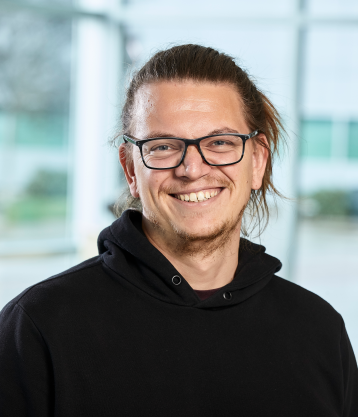

|
|
The Fifteenth International Workshop on
Accelerators and Hybrid Emerging Systems (AsHES) To be held in conjunction with 39th IEEE International Parallel and Distributed Processing Symposium Milan, Italy June 3rd, 2025 |
|
Welcome & Opening remarks
8:30 am - 8:40 am
Keynote: Escaping the Performance Portability Trap: A case of re-arranging priorities
8:40 am - 9:40 am
Escaping the Performance Portability Trap: A Case of Re arranging priorities
Konstantinos Parasyris, LLNL
Abstract:  "In this keynote, I argue that our pursuit of Performance, Portability, and Productivity has led us into a trap. We often treat these goals as equally important and equally attainable at all times — but in practice, this assumption rarely holds. Drawing from recent work in compilers and system software — including kernel-level replay, JIT compilation, and ML-guided runtime systems — I make the case for a re-evaluation of priorities."
Bio: Konstantinos Parasyris is a Computer Scientist at the Center for Applied Scientific Computing (CASC) at Lawrence Livermore National Laboratory (LLNL). His research focuses on programming languages, compilers, and performance engineering for heterogeneous high-performance computing (HPC) systems. He is the involved in several research projects such as Mneme, a record-replay framework for GPU kernel autotuning, Proteus, a just-in-time optimization system for GPU performance and the AMS (Autonomous Multi-Scale Simulation) surrogate model framework. His work has been published at top venues including SC, PACT, CGO, PPoPP, TACO and TPDS. Konstantinos has served on the program committees of SC, IPDPS, EuroMPI, and was a member of the review board for IEEE Transactions on Parallel and Distributed Systems (TPDS). He holds a Ph.D. in Computer Science from the University of Thessaly, Greece, and actively organizes workshops such as LLPP, ESwML, and AI4Dev.
Session: Applications
9:40 am - 10:30 am
-
9:40 am - 10:05 am (Regular)
Performance Characterization of Parallel Combination Generators on CPU and GPU Systems
Brian Donnelly and Michael Gowanlock -
10:05 am - 10:30 am (Regular)
Slaying a Life: Optimizing GPU-accelerated Game of Life Stencil
Matyáš Brabec, Jiří Klepl and Martin Kruliš
Break
10:30 am - 11:00 am
Session: Performance Modeling
11:00 am - 11:50 pm
-
11:00 am - 11:25 am (Regular)
Science per Dollar: Modeling Emerging Node Architectures for Accelerator-centric Computing
Jordan Abt, Ali Farazdaghi, Elizabeth Reid, Curtis Shorts, Tooraj Taraz, Zachary Silva, Ethan Shama, Scott Levy, Whit Schonbein, Matthew Dosanjh, Amirreza Barati Sedeh and Ryan Grant -
11:25 am - 11:50 am (Regular)
Heterogeneity-Aware Software Performance Characterization via Graph Machine Learning
Ronaldo Armando Canizales Turcios and Jedidiah McClurg
Session: Performance Characterization
11:50 am - 12:15 pm
-
11:50 am - 12:15 pm (Regular)
Apple vs Oranges: Evaluating the Apple Silicon M-Series SoCs for HPC Performance and Efficiency
Paul Hübner, Andong Hu, Ivy Peng and Stefano Markidis
Session: Runtimes
12:15 pm - 12:30 pm
-
12:15 pm - 12:30 pm (Short)
ARTEMIS: Adaptive Real-Time Task Execution & Management in Heterogeneous Systems
Tom Springer and Peiyi Zhao
Lunch Break
12:30 pm - 2:00 pm
Session: GPU Communication
2:00 pm - :55 pm
-
2:00 pm - 2:15 pm (Short)
Exploring NCCL Tuning Strategies for Distributed Deep Learning
Majid Salimi Beni, Ruben Laso, Biagio Cosenza, Siegfried Benkner and Sascha Hunold -
2:15 pm - 2:30 pm (Short)
Collaborative Bandwidth-Efficient Intra-Node Allreduce
Amirhossein Sojoodi, Ali Farazdaghi, Hamed Sharifian, Ryan E Grant and Ahmad Afsahi -
2:30 pm - 2:55 pm (Regular)
nbshmem: Enabling GPU-Initiated Multi-GPU Communication in Python
Calvin Bombis and Lena Oden
Session: Virtualization & GPU Sharing
2:55 pm - 3:20 pm
-
2:55 pm - 3:20 pm (Regular)
Towards an efficient containerized cloud gaming platform
Adrien Gégout, Djob Mvondo, Davide Frey and Pascal Manchon